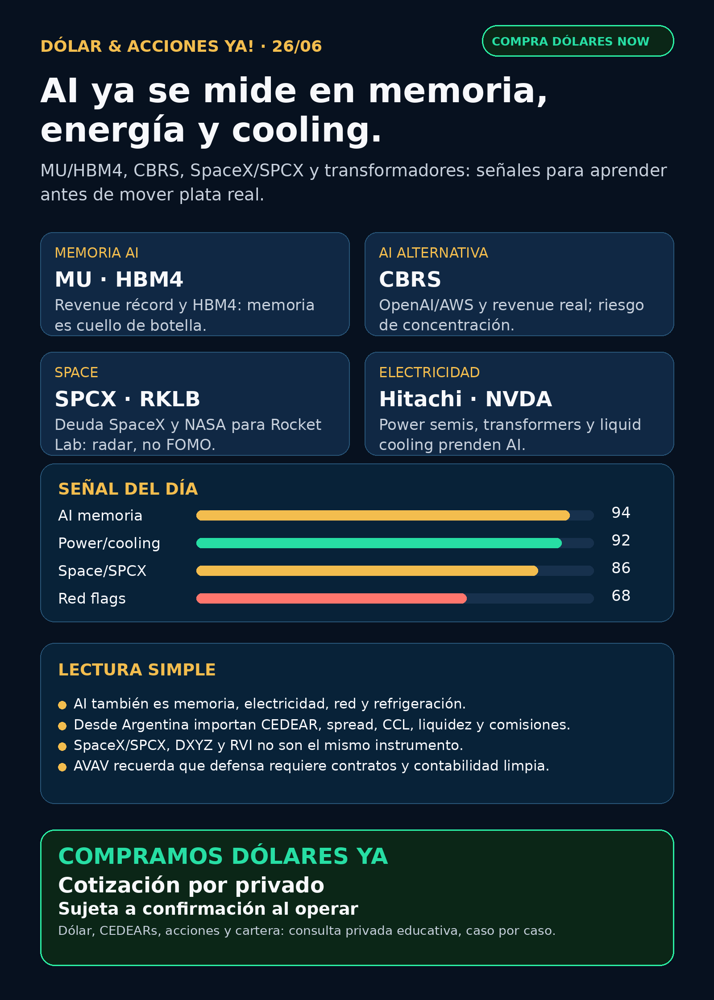

DÓLAR & ACCIONES YA · 26/06
AI ya se mide en memoria, energía y cooling.
Reporte educativo para Argentina: señales verificadas, instrumentos globales/locales y riesgos antes de mover plata real.

Links
Entrega text-only vigente: sin audio, MP3, OGG ni voice bubble.
Reporte completo y fuentes
# Dólar & Acciones YA — 26/06 ## Lectura simple del día La lectura de hoy es bastante concreta: **AI ya no se mira sólo en NVIDIA ni sólo en chips**. La cadena se está volviendo física: memoria HBM, data centers, refrigeración líquida, transformadores, subestaciones, deuda para financiar infraestructura y energía disponible. En criollo: si falta memoria, electricidad o cooling, el modelo no corre. Esto no es una recomendación de compra. Es research educativo para separar cuatro cosas que suelen mezclarse: buena empresa, buen precio, instrumento disponible para Argentina y tamaño razonable dentro de una cartera. ## Tesis central Las señales verificadas de la noche apuntan a un mismo mapa: el mercado está financiando y midiendo la infraestructura real de AI. Micron confirmó demanda fuerte de memoria/HBM4; Cerebras ya muestra ingresos públicos y contratos grandes; SpaceX/SPCX levantó deuda como emisor gigante; Hitachi Energy y NVIDIA refuerzan que electricidad, semiconductores de potencia y cooling son cuellos de botella; y AVAV recuerda que defensa/aerospace también tiene riesgos contables, no sólo narrativa. ## Ranking educativo por calidad de tesis, no por orden de compra 1. **AI física: memoria + energía + cooling.** Es la señal más clara. MU, Hitachi Energy y NVIDIA muestran que el cuello de botella se mueve de “modelo lindo” a infraestructura que se construye y se paga. 2. **Cerebras / CBRS como alternativa pública de AI infra.** Tiene revenue, OpenAI/AWS y tesis real, pero también concentración de clientes, ejecución y valuación post-IPO para auditar. 3. **SpaceX/SPCX.** Ya no es sólo conversación de privada: hay SEC y ahora curva de deuda pública. Pero acción, bono y wrapper tipo DXYZ/RVI son instrumentos distintos. 4. **Fintech/agentic trading: HOOD.** Se financia con convertibles 0,00% para crecer; puede fortalecer plataforma, pero hay riesgo de dilución. 5. **Defensa y pharma.** Revisados con fuente: AVAV trae red flag contable; AZN tuvo avance oncológico. No todo es GLP-1 ni todo contrato militar es verde. ## Watchlist priorizada de hoy ### MU — Micron - **Señal:** Q3 FY2026 con revenue de **USD 41.460 millones**, GAAP net income de **USD 28.240 millones**, operating cash flow de **USD 25.390 millones** y shipments de HBM4 en alto volumen. - **Fuente:** SEC EDGAR EX-99.1 — https://www.sec.gov/Archives/edgar/data/723125/000072312526000013/a2026q3ex991-pressrelease.htm - **Lectura:** memoria/HBM no es accesorio de AI; es cuello de botella central. - **Accionable internacional/global:** en radar para análisis humano. - **Accionable local Argentina:** verificar CEDEAR/disponibilidad, spread, liquidez y CCL antes de hablar de ejecución. - **Riesgo:** ciclo de memoria, márgenes, customer concentration y valuación. ### CBRS — Cerebras Systems - **Señal:** Q1 FY2026 con revenue de **USD 193,4 millones** (+94% interanual), acuerdo OpenAI 750MW por más de **USD 20.000 millones**, partnership con AWS e IPO de **USD 6.400 millones**. - **Fuente:** SEC EDGAR 8-K EX-99.1 — https://www.sec.gov/Archives/edgar/data/2021728/000162828026044941/cbrsannouncesfinancialresu.htm - **Lectura:** competidor/alternativa real en AI infrastructure, no meme suelto. - **Accionable internacional/global:** radar alto. - **Accionable local Argentina:** no verificado como instrumento local; no asumir CEDEAR. - **Riesgo:** concentración OpenAI/AWS/G42/MBZUAI, capacidad, pricing, ejecución y dependencia de data centers. ### SPCX — SpaceX - **Señal:** SpaceX priceó **USD 25.000 millones** de senior unsecured notes con vencimientos 2031, 2033, 2036, 2046 y 2056. - **Fuente:** SEC EDGAR 8-K EX-99.1 — https://www.sec.gov/Archives/edgar/data/1181412/000162828026044955/exhibit991-pricing8xk.htm - **Lectura:** el mercado empieza a tener curva pública de riesgo SpaceX. Eso ayuda a auditar wrappers y narrativas. - **Accionable internacional/global:** en radar; bonos parecen instrumentos institucionales/144A-RegS, no retail simple. - **Accionable local Argentina:** no verificado directo. - **Riesgo:** no confundir empresa extraordinaria con entrada automática ni con comprar cualquier wrapper a cualquier premium. ### RKLB — Rocket Lab - **Señal:** NASA seleccionó Rocket Lab para lanzar PolSIR y TSIS-2 bajo VADR. - **Fuente:** NASA — https://www.nasa.gov/missions/tsis-2/nasa-selects-rocket-lab-to-launch-sun-earth-science-missions/ - **Lectura:** fortalece el carril space/launch, pero no hay que confundir el techo del programa VADR de USD 300 millones con revenue adjudicado directo. - **Accionabilidad:** global en radar; local Argentina pendiente de instrumento/liquidez. ### HOOD — Robinhood - **Señal:** priceó **USD 2.000 millones** de convertible senior notes 0,00% due 2029; parte del dinero va a capped calls y recompras. - **Fuente:** SEC EDGAR EX-99.2 — https://www.sec.gov/Archives/edgar/data/1783879/000178387926000074/projectcatalyst-pricingp.htm - **Lectura en criollo:** una convertible es deuda que puede transformarse en acciones. Financiar a 0% es bueno si el crecimiento acompaña; también puede diluir si convierte. - **Accionabilidad:** global en radar; Argentina/CEDEAR pendiente. ## Energía, grid, transformadores y cooling Este es el carril más educativo del día. El segundo peaje de AI es electricidad física: transformadores, semiconductores de potencia, subestaciones, refrigeración y red. - **Hitachi Energy / Hitachi (`6501.T`, `HTHIY`):** expansión de producción de power semiconductors en Lenzburg dentro de un programa global de **USD 9.000 millones**; la empresa menciona demanda de utilities, industria, data centers y transporte. Fuente: https://www.hitachienergy.com/news-and-events/press-releases/2026/06/hitachi-energy-expands-power-semiconductor-production-at-swiss-site - **NVIDIA Rubin/DSX cooling:** NVIDIA describió AI factories 100% liquid-cooled, coolant de 45°C y closed-loop para ahorrar energía/agua. Fuente: https://blogs.nvidia.com/blog/liquid-cooling-ai-factories/ - **Proxies públicos a revisar:** GEV, ETN, PWR, VRT, MOD, Siemens Energy (`ENR.DE`) e Hitachi (`6501.T`/`HTHIY`). - **Privadas/no accionables directas:** Virginia Transformer y Delta Star quedan como radar industrial, no como acción comprable. **Capa Argentina:** YPF, Pampa Energía, TGS y Central Puerto quedan en radar educativo cuando la tesis sea energía. Hoy la señal local verificable fue **YPF** recomprando Class XXX Notes por Ps. 33.729 millones, par value **USD 23,214 millones**. Fuente SEC: https://www.sec.gov/Archives/edgar/data/904851/000155485526001380/MainDocument.htm ## Pharma / salud - **AZN — AstraZeneca:** Truqap + abiraterone/prednisone aprobado en EE.UU. para PTEN-deficient metastatic prostate cancer; CAPItello-281 redujo 19% el riesgo de radiographic progression/death. Fuente SEC 6-K: https://www.sec.gov/Archives/edgar/data/901832/000165495426005964/a1987i.htm - **LLY / oral GLP-1:** quedó en auditoría. No se publica “FDA aprobó una pill de weight-loss” sin fuente primaria FDA/Lilly/SEC. Conclusión: salud sigue en radar, pero hoy el titular no es GLP-1; es infraestructura AI y señales verificables. ## Defensa, aerospace y guerra física - **AVAV — AeroVironment:** 8-K reportó un error de goodwill impairment: loss/net loss subestimados en **USD 89,402 millones** ligado a BADGER/SCAR; la empresa dice que no impacta cash/revenue. Fuente SEC: https://www.sec.gov/Archives/edgar/data/1368622/000110465926076140/avav-20260616x8k.htm - **Lectura:** defensa/drones siguen en radar, pero no todo titular militar es señal limpia. Integración, contabilidad, contratos y márgenes importan. - **GE Aerospace / RTX / LMT / NOC / GD / HWM / KTOS / BA / ITA-XAR:** revisados; sin señal primaria nueva más fuerte que AVAV para titular hoy. ## Autonomous mobility / physical AI Tesla, Waymo/Alphabet, Uber, Zoox/Amazon y Joby fueron revisados como carril de physical AI/distribución. Hoy no apareció señal primaria nueva que supere memoria + power hardware + cooling. Estado: **revisado sin señal fuerte nueva**. ## Space, private markets y wrappers SPCX queda como carril central por SEC/deuda pública. DXYZ/RVI sirven para estudiar exposición a private tech, pero no son acceso limpio a SpaceX/OpenAI. Antes de cualquier tesis accionable hay que recalcular NAV, premium/descuento, liquidez, holdings reales y acceso Argentina/USA. ## Capa Argentina: dólar, MEP/CCL, CEDEARs y ejecución BlueLytics 2026-06-26T08:45:54.85276-03:00: oficial venta $1498.0, blue venta $1530.0. CriptoYa: MEP AL30 24h $1499.53, CCL AL30 24h $1544.61, USDT ask $1557. Para lectores argentinos: mirar un ticker global no alcanza. Hay que verificar si existe CEDEAR, ratio, volumen local, spread, comisiones, CCL implícito y si el broker permite operar ese instrumento. Buena empresa afuera ≠ buen instrumento local hoy. ## Red flags / hype para ignorar - “AI es sólo NVIDIA”: incompleto. Memoria, power, cooling, networking y red también capturan valor. - “SpaceX ya cotiza, entonces cualquier wrapper sirve”: no. Wrapper, acción, bono y fondo cerrado son cosas distintas. - “Cerebras tiene OpenAI, entonces riesgo cero”: no. Hay concentración, ejecución y valuación. - “HOOD convertible 0% es sólo positivo”: no. Puede financiar crecimiento, pero también diluir. - “LLY pill aprobada por FDA”: no elevar sin fuente primaria. - “Defensa siempre sube por guerra”: no sin contratos, backlog, márgenes y contabilidad limpia. ## Recibo visible de cobertura Revisado hoy: watchlist base (RKLB, NVDA, PLTR, TSM, MU, GOOGL/GOOG, AAPL, HOOD, TSLA, ASML, oro/GLD/GOLD/B, RVI), AI infra/semis/memory/cooling, energía y transformadores, energéticas argentinas, pharma/GLP-1, defensa/aeroespacial, space/SPCX/RKLB/wrappers, fintech/AI agents, autonomous mobility/physical AI y crypto gobernado sin señal nueva para elevar. ## Qué mirar después 1. Acceso Argentina/CEDEAR o broker local para MU, CBRS, HOOD, GEV/ETN/PWR/VRT/MOD, Hitachi/HTHIY y SPCX. 2. Filings SEC de SpaceX/SPCX: deuda, liquidez, estructura y diferencia entre acción/bono/wrapper. 3. Próximos datos de Micron/HBM y pedidos de memoria para AI. 4. Si Cerebras convierte contratos grandes en margen operativo real y baja concentración. 5. En defensa, confirmar contratos DoD/IR/SEC antes de elevar titulares. ## Servicio privado Dólar · CEDEARs · Acciones · Consulta privada. Si querés comprar o vender dólares, invertir en acciones o pensar una estrategia financiera más personalizada, escribime por privado y lo vemos caso por caso. Cotización sujeta a confirmación al momento de operar. ## Disclaimer Este reporte es informativo y educativo. No es asesoramiento financiero personalizado ni una orden de compra o venta. Las decisiones reales dependen de precio, liquidez, instrumento, horizonte, monto, impuestos, comisiones y tolerancia al riesgo.
Servicio privado
Dólar · CEDEARs · Acciones · Consulta privada. Compra/venta de dólares e inversiones caso por caso. Cotización sujeta a confirmación al operar.